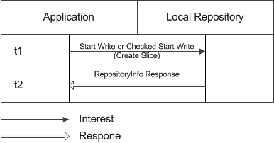

Introduction
Sync is a CCNx facility that allows CCN components and applications to define Collections of named data in Repositories that are to be automatically kept in sync with identically defined Collections in neighboring Repositories. Sync is currently embedded in the Repository, and will be available separately in the future.
The CCNx Create Collection Protocol is used to define these Collections. At a high-level, the process for creating a Collection and starting its synchronization is as follows:
-
Write a definition of the Collection (known as a slice) to the local Repository.
-
Write an identical definition to a remote Repository. (This is done by an application at the remote node.) There must be hash code equality over the two Collections (i.e., agreement on the topological prefix, naming prefix, and filter clauses as described below), and the two Repositories must be neighbors (i.e., reachable with scope = 2).
Create Slice
A slice is created by writing a Content Object with specially formatted contents to the Repository using the standard Start Write or Checked Start Write command as described in CCNx Repository Protocols. The response to the write request is a RepositoryInfo object as described in CCNx RepositoryInfo Object. If the command is accepted, the response Type is INFO; if the request is in error, the response Type is DATA and error info is returned in the Name element of the object.
The name in the Interest is, when expressed as a URI, of the form:
ccnx:/%C1.M.S.localhost/%C1.S.cs/slicehash/version/segment
where:
-
%C1.M.S.localhost restricts the definition to the local node and Repository.
-
%C1.S.cs is the command marker for the Create Slice Interest.
-
slicehash is required, and is the SHA-256 hash of the ccnb encoding in the slice Content Object.
-
version and segment are required and must follow normal CCN naming practices. (See CCNx Basic Name Conventions.)
The Content Object for a slice contains a SyncConfigSlice object whose definition is as follows:
SyncConfigSlice ::= SyncVersion
Name
Name
SyncConfigSliceList
SyncVersion
SyncVersion ::= nonNegativeInteger
SyncVersion specifies the version of the Synchronization protocol, which is used to determine how to parse the Content Object. SYNC_VERSION and SLICE_VERSION are both defined in SyncMacros.h to have values of 20110614.
Name
The first Name is a topological prefix used for routing Root Advise and Node Fetch interests for the Collection. Its purpose is to limit the number of nodes to which these Interests are routed.
The topo prefix must be registered, so its choice is a system-level configuration concern. (See CCNx Repository Policy Handling.) Ideally, it should encompass all nodes on which the Collection might be defined, and no more.
The best strategy for choosing the topo prefix may depend on a number of factors. One choice might be to choose a region-specific topo prefix to limit traffic to an applicable region. Another might be to base it on organization to limit traffic to its members. Note that, although using different topo prefixes can be used to keep traffic separate for organizational reasons, it is not a substitute for real security.
Name
The second Name is the common naming prefix used for every name in the Collection.
SyncConfigSliceList
SyncConfigSliceList ::= (SyncConfigSliceOp, Name)*
SyncConfigSliceList is list of zero or more filter clauses that restrict names that can be in the Collection. If any filter clauses are present, then only names that match at least one filter clause are included in the Collection. As a special case, if there are no filter clauses, then every name with the given prefix is included.
SyncConfigSliceOp
SyncConfigSliceOp is reserved for future use and should be 0.
Name
The Name in a filter clause is a name prefix that restricts the names in the Collection, and may contain wild card components.
-
Each wild card component in a filter clause name matches a single component in a name.
-
The encoding of a wild card component is the single byte 255 (0xFF). To enable byte 255 to start a literal component, any pattern component that starts with byte 255 and has more than 1 byte is treated as the literal component consisting of the bytes following the initial byte.
-
A name matches a filter if it matches any of the filter clauses. (All components are required.) Components of a name longer than the name in the filter clause are accepted as matching. For example, using CCN URI syntax, /X/%FF/Z matches the names /X/Y/Z and /X/Y/Z/W, but does not match the name /X/Z.
Protocol
The protocol for defining a Collection is illustrated below.

When a slice is defined in a Repository, the Repository begins trying to synchronize the Collection with copies in neighboring Repositories as described in CCNx Synchronization Protocol. When an identical slice is defined in a neighboring Repository, automatic synchronization of the two Collections begins.